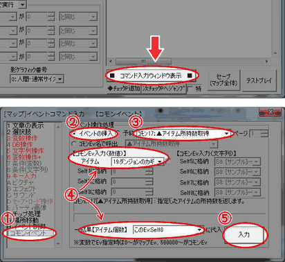
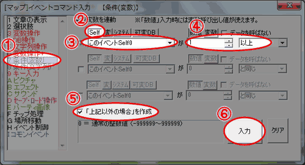
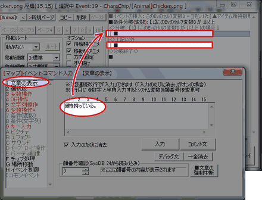
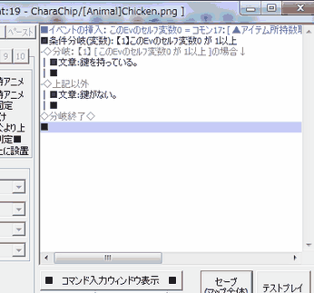
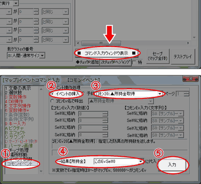
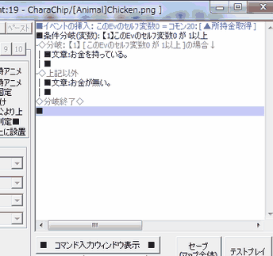
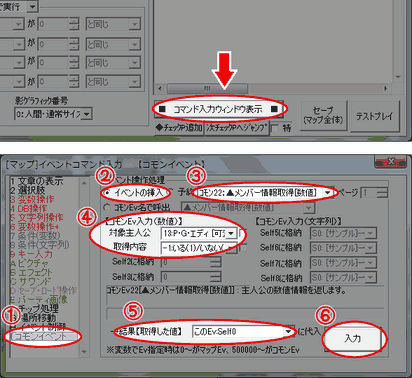
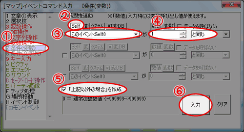
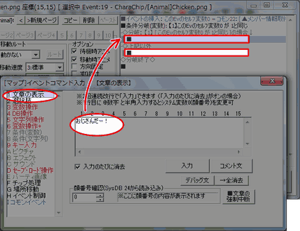
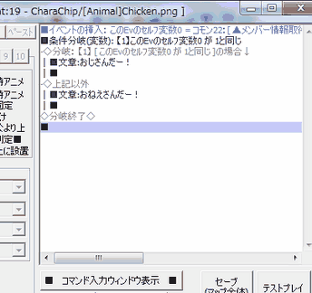

「サンプルマップA」の適当な場所にイベントを作成し、
ニワトリの画像を設定しておきます。
やり方が分からない場合は、「新しいイベントを作ってみたい」の
【1】～【5】を参考にしてみてください。

「1000G渡すと扉を開けてくれる門番さん」のイベントを作りたいとき、
所持金が足りていない場合を考慮せずに無理やり所持金から
1000G引こうとすると、お金が足りなかった場合は所持金がマイナスになるが
通してもらえるという、不自然なことが起こってしまいます。
このようなイベントでは、「所持金が 1000 以上かどうか」を調べて
場合分けすることで理想的なイベントが作れるようになります。
本トピックでは、所持アイテムや所持金の量、あるいは
特定のキャラクターがパーティに加入しているかどうかを調べ、
その結果によって異なる反応をするというイベントを作成することで、
数量やメンバーの有無などの簡単な調べ方と、場合分けの仕方を習得します。
今回は「ダンジョンに入るための鍵の有無に反応するイベント」、
「宿に泊まるためのお金の所持量に反応するイベント」、
「メンバーにP・G・エディがいると反応が変わるイベント」を作成します。
| ■鍵の有無に反応するイベント ダンジョンのカギを持っていると「鍵を持っている。」、 ダンジョンのカギを持っていないと「鍵が無い。」と 表示されるイベントを作ります。 |
| 【1】 イベントの作成 「サンプルマップA」の適当な場所にイベントを作成し、 ニワトリの画像を設定しておきます。 やり方が分からない場合は、「新しいイベントを作ってみたい」の 【1】～【5】を参考にしてみてください。 |
|
| 【2】 イベントの入力 ： アイテム所持数取得 イベントウィンドウの右下にある、 「■ コマンド入力ウィンドウ表示 ■」をクリックしてください。 ①タブを「I コモンイベント」に変更し、イベント操作処理の欄を設定します。 ②ラジオボタンで「イベントの挿入」を選択し、 (デフォルトではここが選択されています) ③右のプルダウンリストで「ｺﾓﾝ17:▲アイテム所持数取得」を選択してください。 ④【コモンEv入力(数値)】の欄で、「アイテム」を「19:ダンジョンのカギ」にしてください。 次にウィンドウ下部の「→結果【アイテム個数】」を「このEv:Self0」にします。 ⑤最後に、ウィンドウ右下の「入力」ボタンを押します。 これで、カギを持っている数を取得して、 その情報を変数(引き出しのようなもの)に格納する処理ができました。 |
 |
| 【3】 イベントの入力 ： 条件分岐コマンドの入力 次に、先ほど格納先に指定した引き出し(変数)を開けて、 中に入っている情報(カギの所持数)によって異なる反応をする部分を作ります。 ①タブを「7 条件(変数)」に変更します。 ②変数の種類は Self を選択してください。 ③そのすぐ下のプルダウンリストで「このイベント:Self0」を選択してください。 ④右の数値欄には 1 を、条件には「以上」を指定してください。 ⑤左下にあるチェックボックス「上記以外の場合」を作成 にチェックを入れてください。 ⑥最後に、ウィンドウ右下の「入力」ボタンを押してください。 これで、「鍵を持っている(=1個以上所持している)場合と、 それ以外(≒0個以下)」の場合を分ける分岐が出来ました。 |
 |
| 【4】 イベントの入力 ： 条件分岐の内容入力 次は分岐の内容を入力します。 次にコマンド入力ウインドウを閉じ、さきほど入力された鍵の数での分岐の内容を入れます。 文章入力を使用して 「◇分岐:【1】[ このEvのｾﾙﾌ変数0が 1以上 ]の場合↓」に「鍵を持っている。」を、 「◇上記以外」に「鍵がない。」を入力してください。 入力の方法が分からないときは、トピック「新しいイベントを作ってみたい」の 【7】【8】を参考にしてください。 |
 |
| 【5】 イベントの確認 イベントの内容は右の画像のようになっているでしょうか。 これで、鍵を1個でも持っている場合は「鍵を持っている。」と、 鍵を持っていない場合は「鍵がない。」と言うイベントが作れました。 テストプレイをしてみて、実際に動くことを確認してみてください。 お疲れ様でした！ |
 |
| ■お金の所持量に反応するイベント お金を1ゴールドでも持っていれば「お金を持っている。」、 お金を全く持っていなければ「お金が無い。」と 表示されるイベントを作ります。 |
| 【1】 イベントの作成 「サンプルマップA」の適当な場所にイベントを作成し、 ニワトリの画像を設定しておきます。 やり方が分からない場合は、「新しいイベントを作ってみたい」の 【1】～【5】を参考にしてみてください。 |
|
| 【2】 イベントの入力 ： 所持金の数値取得 イベントウィンドウの右下にある、 「■ コマンド入力ウィンドウ表示 ■」をクリックしてください。 ①タブを「I コモンイベント」に変更し、イベント操作処理の欄を設定します。 ②ラジオボタンで「イベントの挿入」を選択し、 (デフォルトではここが選択されています) ③右のプルダウンリストで「ｺﾓﾝ20:▲所持金取得」を選択します。 ④次にウィンドウ下部の「→結果【所持金】」を「このEv:Self0」にします。 ⑤最後に、ウィンドウ右下の「入力」ボタンを押します。 これで、お金の所持量を取得して、 その情報を変数に格納する処理ができました。 |
 |
| 【3】 イベントの入力 ： 条件分岐コマンドの入力 次に、先ほど格納先に指定した変数を参照して、 中に入っている情報(所持金の量)によって異なる反応をする部分を作ります。 ①タブを「7 条件(変数)」に変更します。 ②変数の種類は Self を選択してください。 ③そのすぐ下のプルダウンリストで「このイベント:Self0」を選択してください。 ④右の数値欄には 1 を、条件には「以上」を指定してください。 ⑤左下にあるチェックボックス「上記以外の場合」を作成 にチェックを入れてください。 ⑥最後に、ウィンドウ右下の「入力」ボタンを押してください。 これで、「お金を持っている(=1以上所持している)場合と、 それ以外(≒0以下)」の場合を分ける分岐が出来ました。 |
| 【4】 イベントの入力 ： 条件分岐の内容入力 次は分岐の内容を入力します。 次にコマンド入力ウインドウを閉じ、 さきほど入力された所持金の量での分岐の内容を入れます。 文章入力を使用して 「◇分岐:【1】[ このEvのｾﾙﾌ変数0が 1以上 ]の場合↓」に「お金を持っている。」を、 「◇上記以外」に「お金が無い。」を入力してください。 入力の方法が分からないときは、トピック「新しいイベントを作ってみたい」の 【7】【8】を参考にしてください。 |
 |
| 【5】 イベントの確認 イベントの内容は右の画像のようになっているでしょうか。 これで、お金を1ゴールドでも持っている場合は「お金を持っている。」と、 お金を持っていない場合は「お金が無い。」と言うイベントが作れました。 テストプレイをしてみて、実際に動くことを確認してみてください。 お疲れ様でした！ |
 |
| ■P・G・エディがいると反応が変わるイベント P.G.エディがメンバーにいると「おじさんだー！」、 P.G.エディがいなければ「おねえさんだー！」と 表示されるイベントを作ります。 |
| 【1】 イベントの作成 「サンプルマップA」の適当な場所にイベントを作成し、 ニワトリの画像を設定しておきます。 やり方が分からない場合は、「新しいイベントを作ってみたい」の 【1】～【5】を参考にしてみてください。 |
|
| 【2】 イベントの入力 ： アイテム所持数取得 イベントウィンドウの右下にある、 「■ コマンド入力ウィンドウ表示 ■」をクリックしてください。 ①タブを「I コモンイベント」に変更し、イベント操作処理の欄を設定します。 ②ラジオボタンで「イベントの挿入」を選択し、 (デフォルトではここが選択されています) ③右のプルダウンリストで「ｺﾓﾝ22:▲メンバー情報取得[数値]」を選択してください。 ④【コモンEv入力(数値)】の欄で、 「対象主人公」を「13:P･G･エディ [可変0]」に、 「取得内容」を「-1:いる(1)/いない(0)」にしてください。 ⑤ウィンドウ下部の「→結果【取得した値】」を「このEv:Self0」にします。 ⑥最後に右下の「入力」ボタンを押してください。 これで、エディがメンバーにいるかどうかを取得して、 その情報を変数に格納する処理ができました。 |
 |
| 【3】 イベントの入力 ： 条件分岐コマンドの入力 次に、先ほど格納先に指定した変数を参照して、 中に入っている情報(エディがいるかどうか)によって異なる反応をする部分を作ります。 ①タブを「7 条件(変数)」に変更します。 ②変数の種類は Self を選択してください。 ③そのすぐ下のプルダウンリストで「このイベント:Self0」を選択してください。 ④右の数値欄には 1 を、条件には「と同じ」を指定してください。 ⑤左下にあるチェックボックス「上記以外の場合」を作成 にチェックを入れてください。 ⑥最後に、ウィンドウ右下の「入力」ボタンを押してください。 これで、「P･G･エディがいる場合と、それ以外(いない)」の 場合を分ける分岐が出来ました。 |
 |
| 【4】 イベントの入力 ： 条件分岐の内容入力 次は分岐の内容を入力します。 次にコマンド入力ウインドウを閉じ、さきほど入力された分岐の内容を入れます。 文章入力を使用して 「◇分岐:【1】[ このEvのｾﾙﾌ変数0が 1 と同じ ]の場合↓」に「おじさんだー！」を、 「◇上記以外」に「おねえさんだー！」を入力してください。 入力の方法が分からないときは、トピック「新しいイベントを作ってみたい」の 【7】【8】を参考にしてください。 |
 |
| 【5】 イベントの確認 イベントの内容は右の画像のようになっているでしょうか。 これで、メンバーにP･G･エディがいる場合は「おじさんだー！」と、 P･G･エディがいない場合は「おねえさんだー！」と言うイベントが作れました。 テストプレイをしてみて、実際に動くことを確認してみてください。 お疲れ様でした！ |
 |
| ■その他のことがらの調べ方 今回は「アイテムの所持数」「所持金」「パーティの特定メンバー」を コモンイベントを使用して調べる方法をご紹介しましたが、 この３つ以外にも調べられることはたくさんあります。 |
| １．ｺﾓﾝ17：▲アイテム所持数取得 今回使用しました。特定のアイテムの所持数を調べられます。 鍵などのアイテムを1個以上持っているかどうかだけでなく、 回復薬を複数個要求してくる医者、のようなイベントにも使えるでしょう。 ２．ｺﾓﾝ18：▲武器所持数取得 特定の武器の所持数を調べられます。装備中のものは所持数には 入りませんので、「ｺﾓﾝ21：▲装備取得」を使用してください。 鋼の剣を譲ってくれと頼んでくる剣士、などのイベントが作れます。 ３．ｺﾓﾝ19：▲防具所持数取得 ほぼ同上ですが、特定の防具の所持数を調べられます。 装備中のものは所持数には入りませんので、 「ｺﾓﾝ21：▲装備取得」を使用してください。 城内に不足している革の鎧を買い取ってくれる兵士、のようなことができます。 ４．ｺﾓﾝ20：▲所持金取得 今回使用しました。今回は無一文かそうでないかで分岐しましたが、 たとえば100ゴールド以上持っているかを調べ、持っていれば 所持金から100ゴールド引いて回復してくれる、アイテムをくれるなど、 お店のようなこともできます。 ５．ｺﾓﾝ21：▲装備取得 指定した主人公(パーティに加えられるキャラクター)の装備がどれかを調べられます。 装備欄のどこに装備しているかや、武器か防具かまで指定できます。 母親の形見を身に着けた女の子に対して反応する老人、などの演出に使えます。 ６．ｺﾓﾝ22：▲メンバー情報取得[数値] 今回使用しました。指定した主人公ひとりのレベルやHP、攻撃力など さまざまなステータスと、パーティにいるかいないかを調べられます。 武闘家の攻撃力が一定以上なら壁を破壊、のようなイベントが作れます。 ７．ｺﾓﾝ23：▲メンバー情報取得[文字列] 指定した主人公ひとりの名前や肩書きを調べられます。 今回ご紹介している調べ方のうち、これだけは文字列を扱うので、 分岐を作る場合は「条件(文字列)」を使用してください。 数値しか入力できない変数と、文字列が入れられる文字列変数は 性質のまったく違うものなので、条件分岐も違うものになります。 肩書に「盗賊」が入っていると襲い掛かってくる賞金稼ぎなど、 利用方法によっては面白い仕掛けが作れるかもしれません。 ８．ｺﾓﾝ24：▲状態異常の取得 指定した主人公ひとりが特定の状態異常に掛かっているかを調べられます。 休んでも解消しない呪いを解いてくれる神官などを作る時に使えます。 ９．ｺﾓﾝ25：▲特殊技能の有無取得 指定した主人公ひとりが特定の特殊技能を習得しているかを調べられます。 全員の特殊技能を調べて、誰か1人でも「究極魔法」を使えるときだけ戦いを挑める 大魔道士、などもいいかもしれません。 １０．ｺﾓﾝ26：▲戦闘コマンド有無の判定 指定した主人公ひとりが特定の戦闘コマンドを使えるかを調べられます。 勇者の必殺技をパワーアップしてくれる賢者などが欲しい時にはこれの出番です。 |
|
■可変データベースを直接参照して分岐させる方法 今回は、「コモンイベントを使用して値を調べてから、それを 変数に格納し、変数に入れた値を呼び出して結果によって分岐する」 という方法をとりました。 しかしウディタの使い方がある程度分かってくると、 コモンイベントを経由せずに直接 条件分岐で値を指定して分岐させられるようになり、 こちらの方が応用が効いて便利であることも少なくありません。 この方法は中級者以上向けで、データベースを指定する方法です。 今回挙げた例はすべて「可変データベース」に入っている情報ですから、 以下の方法で、今までにご紹介したことと同じことが出来ます。 イベントコマンド入力ウィンドウでタブを「7 条件(変数)」にして、 変数の種類は「可変DB」を選択します。 すると入力欄の形が変わって短い数値入力欄3つになりますから、 ここに可変データベースのタイプ・データ・項目のそれぞれの番号を入力します。 たとえば[ 0:12:4 ]だと、タイプ0番「主人公ステータス」の データ12番「ウルファール」の項目4番「レベル」の 中に入っている数値(初期設定では 5 )が呼ばれます。 直感的な操作からはやや離れる方法ですが、便利な方法ですから、 制作に余裕が出てきたらぜひ習得してみてください。 |
＜執筆者：ウディタ公式ガイド執筆コミュ。＞